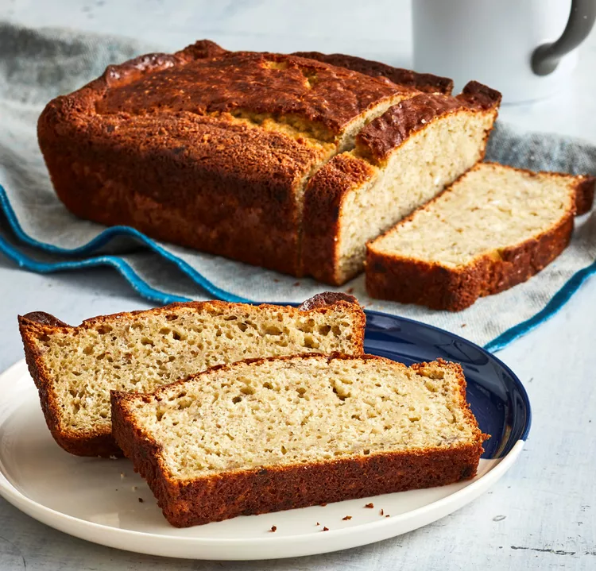

Banana Chai Bread

A low-fat banana bread flavored with chai. Chai is a spicy Indian tea, which should be available in many supermarkets.
Ingredients
- 1 ¾ cups all-purpose flour
- 1 tablespoon baking powder
- ½ teaspoon salt
- ¾ cup white sugar
- ½ cup lowfat cream cheese
- 2 eggs
- ¾ cup mashed bananas
- ¼ cup brewed chai tea
Steps for Preparation
- In a medium bowl mix together flour, baking powder, and salt.
- In a separate bowl mix sugar, cream cheese, and eggs until light and fluffy. Mix mashed bananas and Chai into cream cheese mixture. Add flour mixture and mix until smooth.
- Pour mixture into a greased 9x5 inch loaf pan.
- Bake in a preheated 350 degree F(175 degrees C) oven for 60 minutes. Cool on rack. Remove from pan after 10 minutes.
Enjoy the food